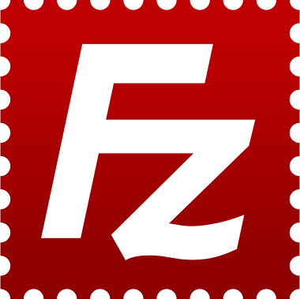
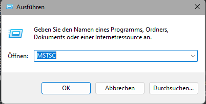
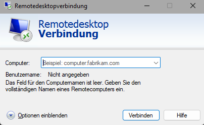

 FileZilla Download
Nachdem Man auf den Button Geklickt hat einfach den anweisungen des Dowenloader befolgen
Remote Desktop
Windows Remote Destop Protocoll ist bereits auf windows installiert
Mit Der Windows taste + r taste kann man die run dialog box öffnen
Hier gibt man einfach "MSTSC" ein und drückt enter
Hier gibt man die gewünschten daten ein
